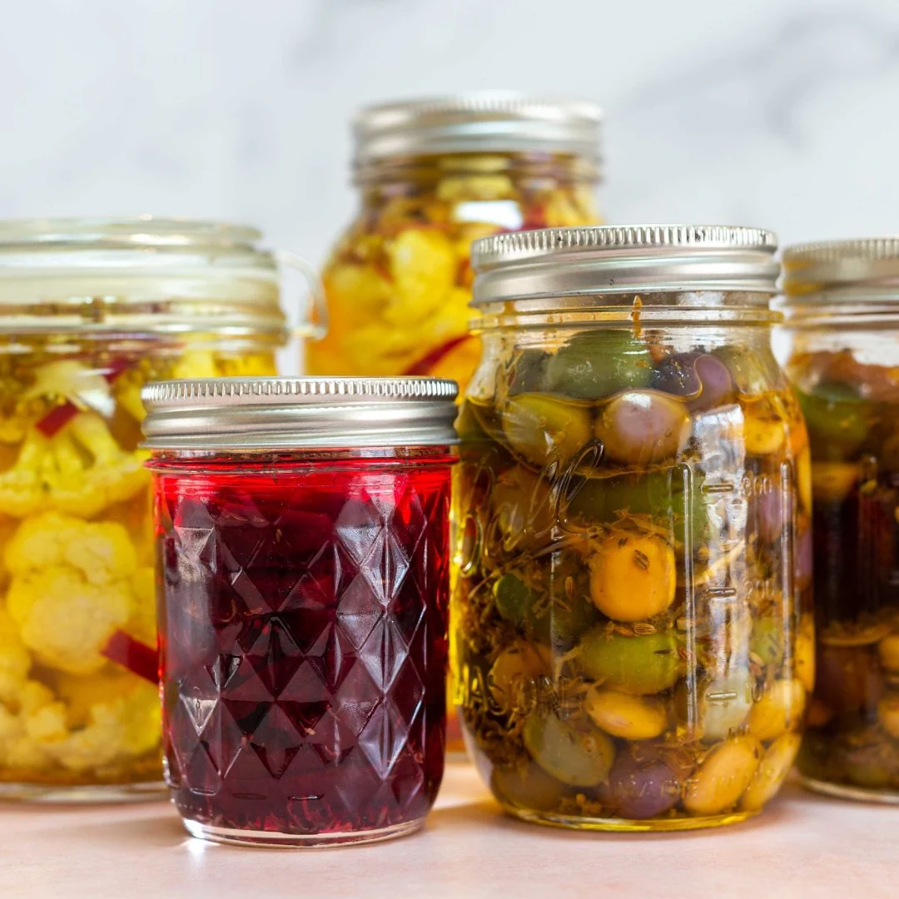
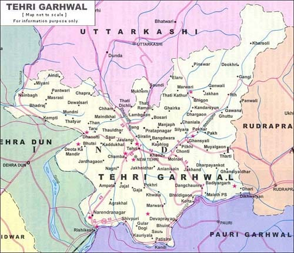

Tehri Garhwal is renowned for its traditional pickles that are made using indigenous recipes passed down through generations. These pickles, crafted with fresh organic vegetables and fruits like mango, lemon, amla, and local chili varieties, are preserved in mustard oil and natural spices without the use of synthetic preservatives. The unique flavor of Tehri pickles comes from the pure mountain-grown ingredients, cool climate, and age-old sun-curing techniques. These pickles not only serve as a staple side dish in homes across Uttarakhand but are now also finding markets nationwide for their authentic taste and long shelf life. From spicy bamboo shoot pickles to tangy rhododendron flower (buransh) pickles, Tehri’s offerings are diverse, nutritious, and deeply rooted in the local culture.
Pickling has been a traditional method of food preservation in Tehri Garhwal for centuries, especially during harsh winters when fresh vegetables were scarce. Local women have played a significant role in preparing these delicacies, often coming together in groups to produce and sell pickles as part of cooperative movements. Tehri’s hilly terrain and natural biodiversity provide the perfect ingredients for a range of pickled products. These pickles are often seasoned with Himalayan herbs and spices like jakhiya, bhangjeera, and mustard, which impart a distinct flavor. The products are not only enjoyed locally but also carry nostalgic value for people from Uttarakhand living across India.
For bulk purchases or retail inquiries, reach out to Tehri Organic Women Pickle Cooperative at email pnraturi05@gmail.com. Their products are available at local Tehri markets like Chamba Bazaar and online on https://patanjalistores.patanjaliayurved.org/patanjali-arogya-kendra-health-food-shop-chamba-tehri-garhwal-268598/Home.

- Some pickles in Tehri are fermented using traditional terracotta jars that enhance flavor naturally.
- Pickle-making is often a family tradition and part of wedding rituals where brides are taught to prepare signature recipes.
- Rhododendron flower pickle is a unique specialty of Tehri Garhwal, known for its medicinal value.
- These pickles are sun-dried and matured for several days to enhance taste and longevity without additives.